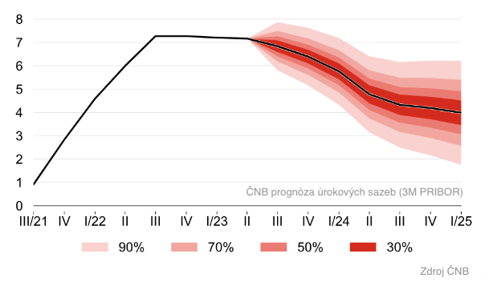

Investiční report - září 2023
SPOJENÉ STÁTY AMERICKÉ
- Měsíční změna na US akciích - 6,25 %, trh je vyvážený
- Aktuální výnos na US dluhopisech + 4,76 %
Září letošního roku bylo pro globální trhy akcií nejhorším měsícem za poslední rok a pro světové dluhopisy nejslabším od února. Index S&P 500 klesl o zhruba 7 % od konce července a o více než 5 % za září. I přesto zůstává v roce 2023 stále v plusu, s růstem o více než 11 %. Index Nasdaq 100 ztratil téměř 6 % v září, zatímco Dow Jones ztratil více než 3 %. Jedním z faktorů, které stáhly akcie dolů, bylo varování Federálního rezervního systému (FED) na zářijovém zasedání, kde uvedl, že očekává pouze dvě snížení úrokových sazeb v roce 2024, místo čtyř předpovězených v červnu.
Další ekonomické prognózy ukazují významné zvýšení odhadu růstu reálného HDP pro rok 2023, z 1,0 % odhadovaného v červnu na 2,1 %, zatímco prognóza jádrové inflace byla mírně revidována dolů, z 3,9 % na 3,7 %. Výsledkem této revize byla v září na trzích dluhopisů výrazná volatilita, kdy výnosy prudce vzrostly, protože investoři zpracovávali scénář "vyššího růstu na delší dobu" s referenčním 10letým dluhopisovým výnosem, který dosáhl úrovní neviděných od roku 2007. Tyto vyšší výnosy vyvíjejí tlak na globální akciové trhy, čímž je zmenšují jejich atraktivitu.
Trhy se také potýkají s růstem cen ropy a posilujícím americkým dolarem. Kombinace růstu cen ropy a stoupajících sazeb není pro akciové trhy příznivá.
Pro naše investory to znamená další měsíc, kdy jsme se vyvarovali ztrátě peněz kvůli poklesu dlouhodobých dluhopisů tím, že jsme do nich nezainvesovali příliš brzy. Je vidět, že ta správná doba pro přesun majetku z krátkodobých dluhopisů do dlouhodobých ještě nenastala. Stále proto zůstáváme trpěliví a vyčkáváme na ideální příležitost k přesunu do dlouhodobých dluhopisů, které s klesajícími sazbami a nižší volatilitou dokáží přinést zajímavé investiční příležitosti.
EVROPA
- Měsíční změna na EU akciích - 5,06 %, trh je vyvážený
- Aktuální výnos na EU dluhopisech + 2,96 %
Evropa se nyní potýká s obavami o růst. Podnikatelská aktivita se zdá zpomaluje, když 'index flash composite purchasing managers v září klesl na 47,1 z 46,7 v srpnu. (Vysvětlení: Index PMI je důležitým indikátorem, který nám pomáhá měřit zdraví ekonomiky a podnikatelskou aktivitu v určitém regionu, například v Evropské unii (EU) nebo ve Spojených státech. Jedná se o sledování aktuálního stavu průmyslové a ekonomické činnosti.) Nicméně inflace nadále klesá, což zvyšuje očekávání, že Evropská centrální banka (ECB) po svém zářijovém zasedání, kde sazby ponechala na stabilní úrovni, skončila s jejich zvyšováním. Pro naše investory to znamená, že akcie v Evropě mohou dále stagnovat. My nadále monitorujeme situaci a budeme hlásit všechny další důležité události v EU.
ČESKÁ REPUBLIKA
- Měsíční změna na CZ akciích - 0,35 %, trh je vyvážený
- Aktuální výnos na CZ dluhopisech + 4,91 %

Česká ekonomika v druhém čtvrtletí klesla o 0,6 % meziročně. Bankovní rada 7. září 2023 rozhodla o zrušení úročení povinných minimálních rezerv bank (PMR). To může být jeden z prvních signálů postupného snižování úrokových sazeb, které zatím zůstávají na 7 % bodech. Na grafu vedle můžete vidět aktuální prognózu úrokovách sazeb od České národní banky. Červeně jsou znázorněna očekávání ČNB na postupné snižování úrokových sazeb. Pro naše investory to znamená, že peníze úročené na krátkodobých dluhopisech nebo na spořících účtech v bankách mohou začít pomalu ztrácet atraktivitu. Hrubý domácí produkt (HDP) zůstává stabilní. Inflace se nadále snižuje, ale stále zůstává vyšší, konkrétně na 8,5 % a brzdí růst ekonomiky, jelikož zpomaluje investice a omezuje výdaje domácností. Pro naše investory to znamená, že můžeme ve druhé polovině roku očekávat jen mírné oživení.